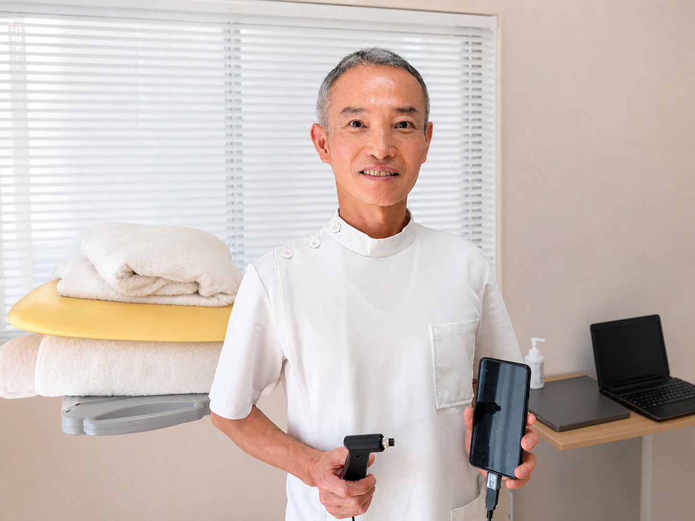
プロも通う完全紹介制の身体チューニング。
西洋医療的な科学分析と、
東洋医療的な自然の叡智が融合。
静かに、確実へ。
施術とは、一方的に施すものではありません。
施術者の「与える力」と、患者様の「受け取る力」の波長がぴたりと合った時、初めて真の治癒力が発揮されます。当院では、この「共鳴」プロセスを最も重要視し、対話・センサー分析・触手よる感覚を通じてあなたの身体の声を聴き取ります。
身体の状態は日々変わります。センサーによって数値化された化学的な把握と分析、それを人間の感覚や自然の状況によって論理的に組み立て行い、施術に反映します。
当院が完全紹介制をとっているのは、決して敷居を高くするためではありません。
「信頼の輪」を守り、ご縁のあった一人ひとりの身体と極限まで向き合うための、私たちなりの覚悟です。
限られた時間と空間の中で、妥協のない最高峰の身体チューニングを提供することを目的としています。
矢田氏が35年以上の歳月をかけて確立した「BCトータルバランスシステム」は、単なる筋力強化ではなく、「細胞レベルからの生体リズム回復」と「キネティックチェーン（運動連鎖）」の最適化に焦点を当てています。
現代の心理的緊張によって乱れた生体リズムを、自然界の周期（月の満ち欠けや地球の自転など）と同調させることで、人間本来の自然治癒力を引き出します。
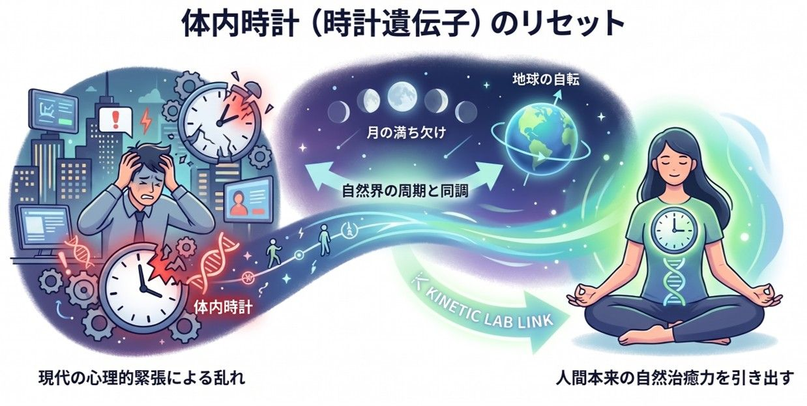
「キネティックラボセンサー（伍六七）」を用いて身体の歪みを数値化し、不調の根本原因を解析します。本人が気づかない動作の癖を早期に発見します。
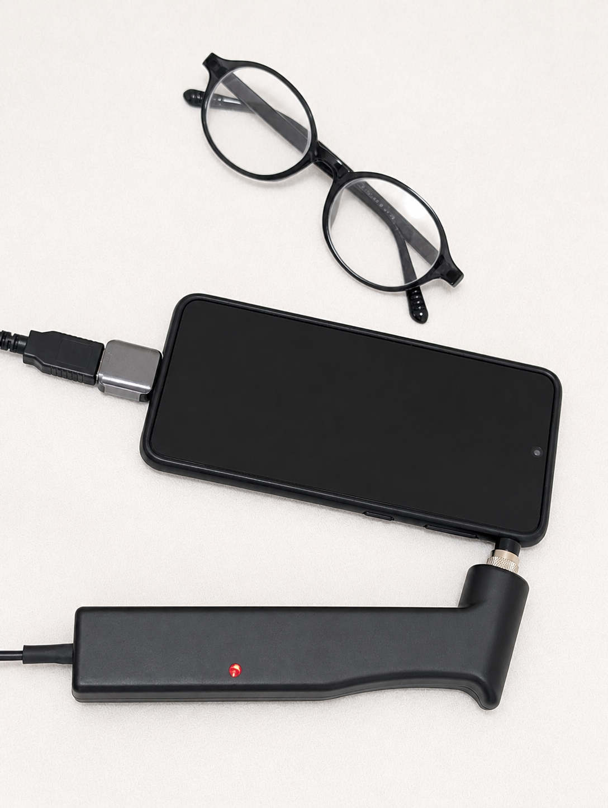
解析結果よりボディバランス改善を行います。細胞膜の構成成分を主成分とした専用の施術材料を使用し、身体の浅層から深層まで優しくアプローチします。
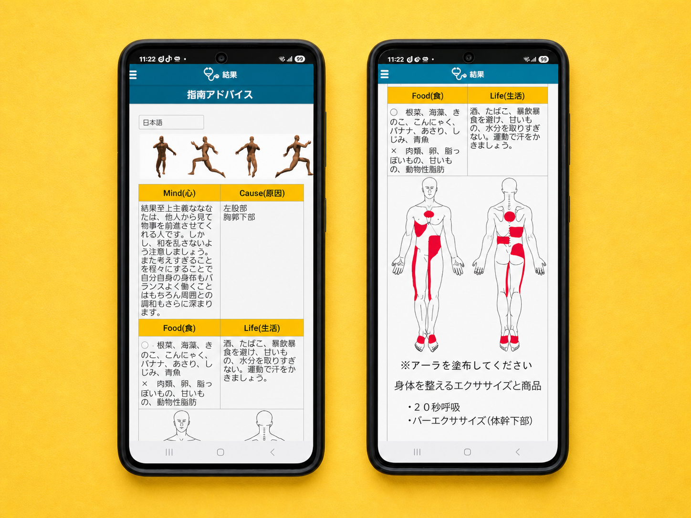
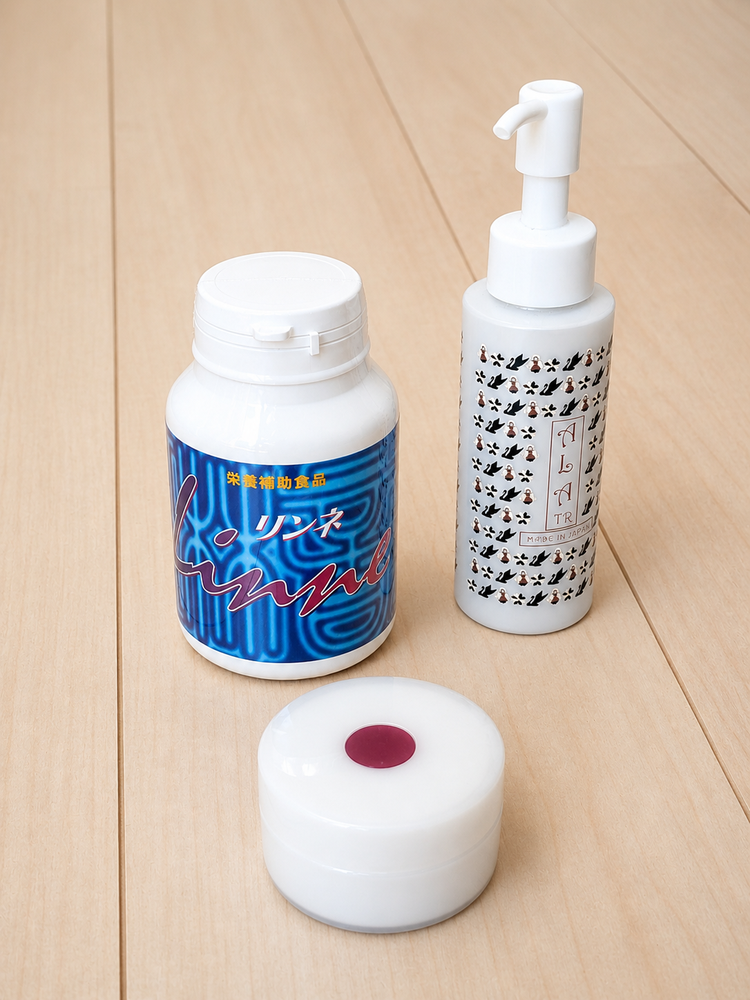
月の動きと同期する「太陰鼓動」や、地球の動きと同期する「太陽鼓動」といった独自の呼吸エクササイズにより、身体の軸を安定させます。
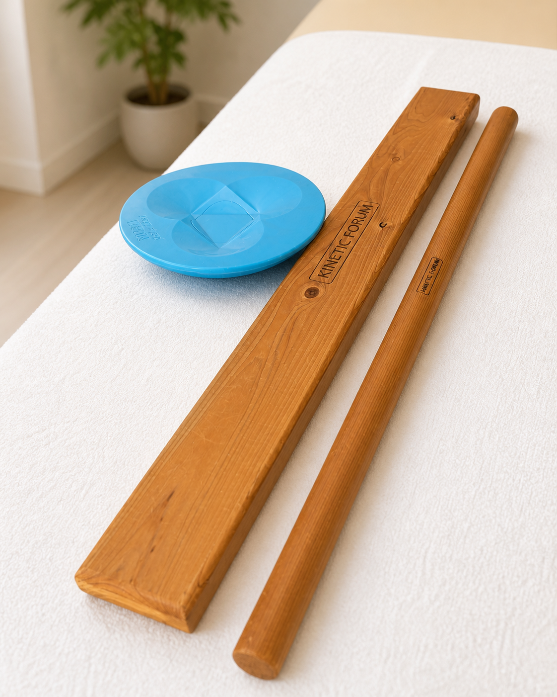
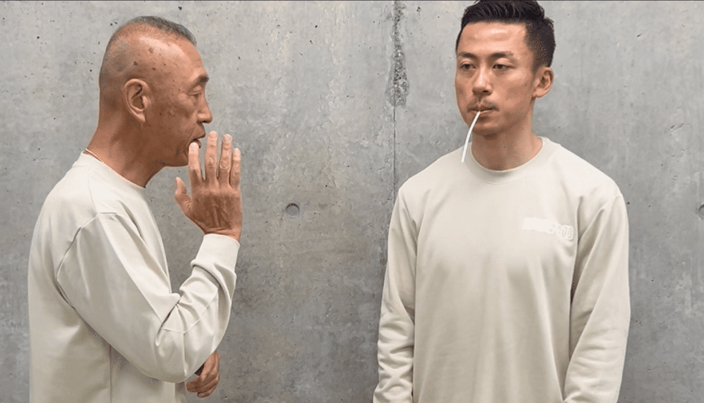
人間の身体は、約70%が水分で構成されています。
潮の満ち引きが月の引力によって引き起こされるように、私たちの身体もまた、自然のリズムと密接に連動しています。
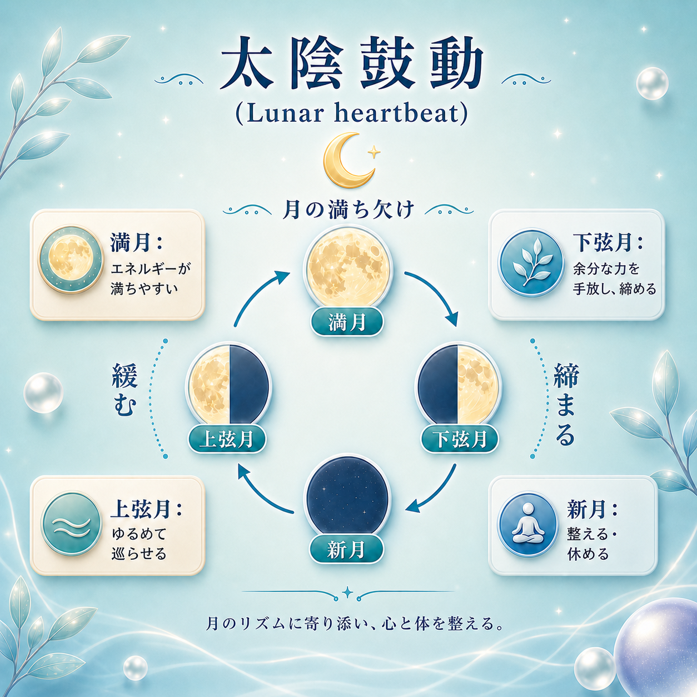
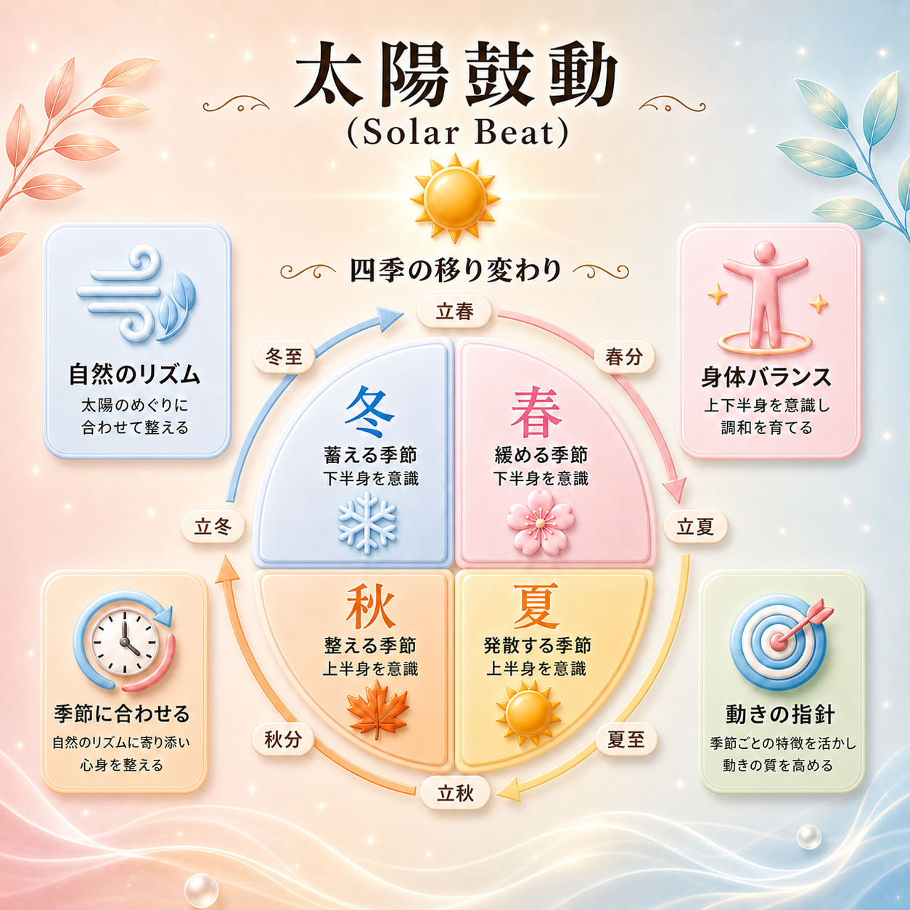
当院では、その日の月の満ち欠けや、患者様自身のバイオリズム（状況）に合わせて、アプローチの強度やツールを緻密に使い分けます。自然の理に逆らわず、身体が最も受け入れやすい状態を見極めてケアを行います。
トップアスリートのコンディショニング理論の原点
ロサンゼルスドジャース 山本由伸投手のトレーナーとしても知られる矢田修氏のもとで住み込みで修業し、キネティックフォーラムの立ち上げ当初よりBCトータルバランスの研究と向上に人生を注いできました。
患者様との信頼関係を醸造してお互いに真剣に向き合うからこそ、最高の結果が生まれるのだと信じております。当院の施術は力任せではなく、ポイントを押さえ、身体のバランスを整うことを感じていただき、それが土台となってパフォーマンス向上に繋がることを感じて頂けましたら幸いです。
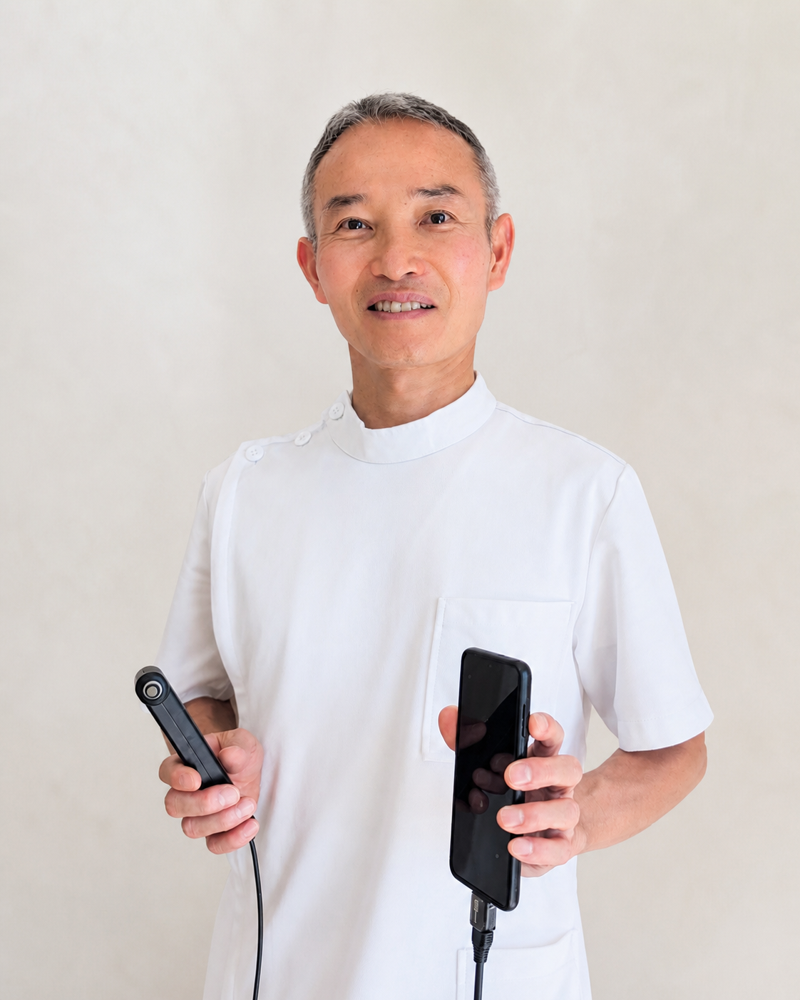
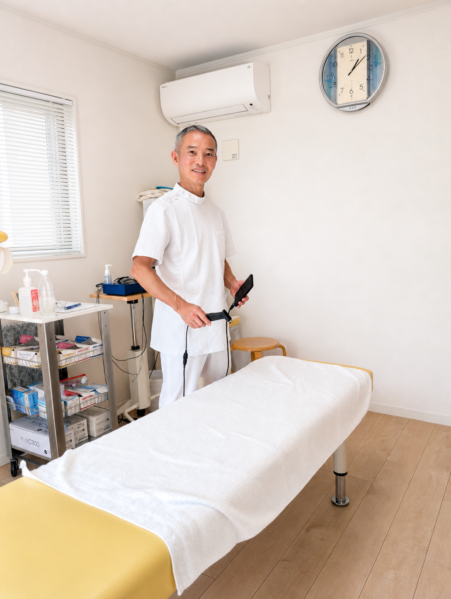
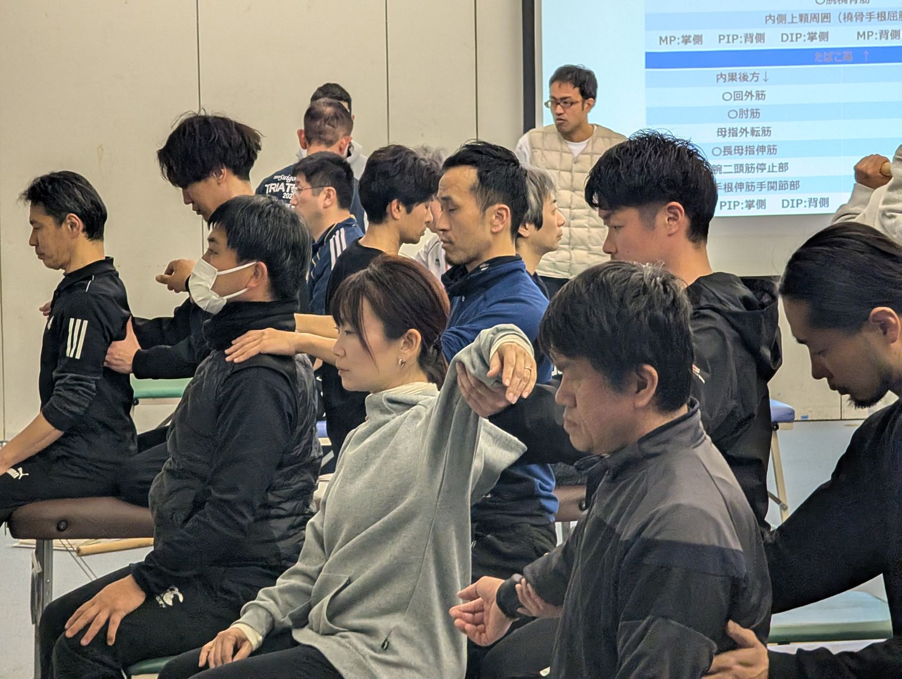
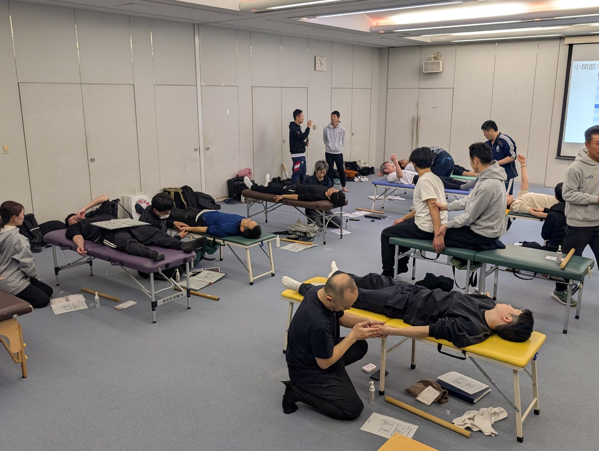
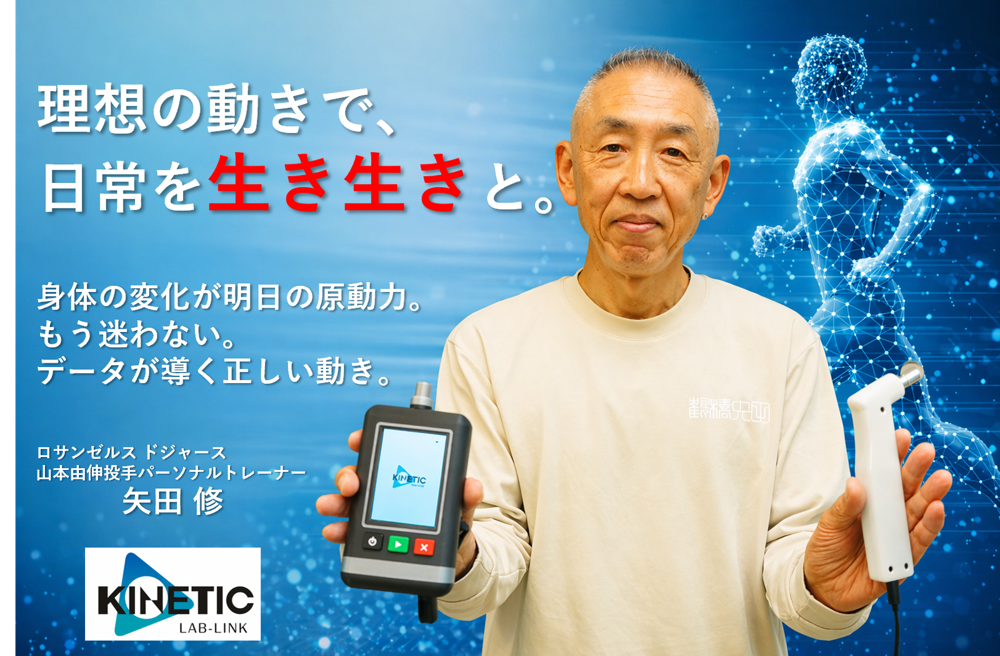
日々のセルフコンディショニング
1日わずか約82円(5年版)で、
ドジャース山本由伸投手の
パーソナルトレーナー
矢田修AIがあなたの専属に。
当院の施術基盤「BCトータルバランスシステム」の叡智が、いつでもあなたの手元に。日々の測定から指導まで、AIがあなた専用のサポートを提供します。
KINETIC LAB-Link公式サイトはこちら院長：菅原 広幸
〒352-0011
埼玉県新座市野火止5-3-42
※当院は完全紹介制のため、
電話番号は非公開としております。
当院はご紹介者様からのご縁を大切にするため、完全紹介制とさせていただいております。また、施術中の集中を保つため、電話番号は非公開としております。
【ご予約の流れ】
送信完了後、確認メールにて当院の電話番号をお知らせいたします。その後、院長より直接日程調整のご連絡を差し上げます。
お問い合わせありがとうございます。
内容を確認次第、院長より直接ご連絡を差し上げます。
お急ぎの場合は、下記のお電話番号までご連絡ください。
お電話でのお問い合わせ
048-475-9919